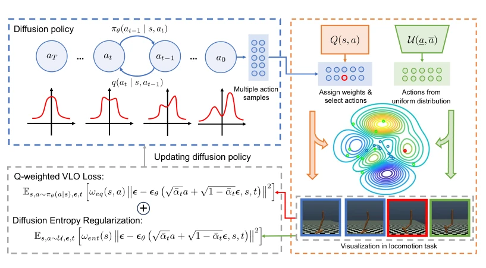
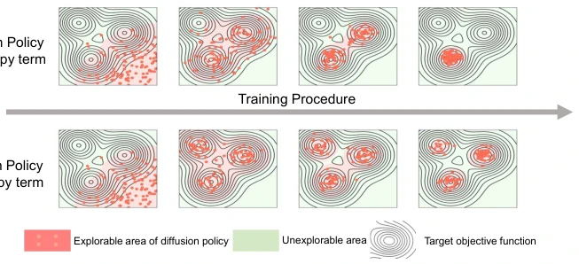
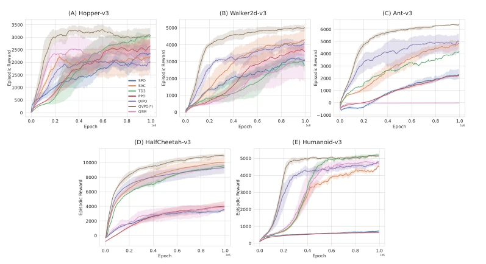
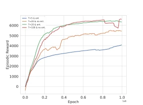
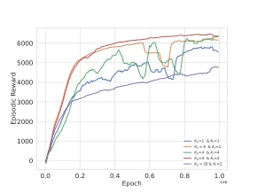

This paper attempts to fit diffusion models into the challenge of Online Reinforcement Learning (Online RL). It is well known that diffusion models are very popular in offline RL and imitation learning, but in online RL, because "good samples" cannot be obtained, the training objective cannot be directly applied. QVPO proposed a Q-weighted VLO loss, claiming it is a tight lower bound. It sounds very theoretical, but the actual performance on MuJoCo is indeed good. However, slow diffusion model inference is a fatal flaw; although they implemented action selection to reduce variance, reducing steps leads to decreased expressiveness. Overall, it is a solid engineering improvement, but it does not solve the fundamental problem of online inference latency in diffusion models, belonging to "running fast in the sandbox, but the real machine still depends on luck". Furthermore, the accuracy of Q values directly determines performance; if the Q network itself is inaccurate, this weighted lower bound becomes "garbage in, garbage out". For online RL, this counts as a successful "theoretical implementation", but there is still a distance to general embodied intelligence.
Diffusion models perform well in decision-making tasks, mainly due to their multimodality and strong expressiveness. However, in online RL, value estimation changes with the policy, and there are no ready-made optimal samples. Existing works such as DIPO [42] use gradient updates for actions, limiting global exploration; QSM [31] aligns score and Q gradients, but inaccurate Q networks lead to error accumulation. These methods fail to fully utilize the exploration potential of diffusion models and lack sufficient theoretical guarantees. This paper aims to solve the problem that diffusion policy training objectives cannot be directly applied in online RL, requiring a method that can utilize Q values to guide the diffusion process. Specifically, addressing the problems of potentially negative Q values and scarcity of high-quality samples, transformation functions are proposed. This fills the theoretical gap of Diffusion Policy in the online RL field, allowing diffusion models to no longer be limited to offline data.
The core is the Q-weighted VLO Loss. First, through theorem proof, the variational lower bound after Q weighting is shown to be a tight lower bound of the policy objective. Addressing the problem of potentially negative Q values, qcut and qadv transformation functions are proposed, using Advantage to replace Q values. Second, to enhance exploration, Diffusion Entropy Regularization is designed, utilizing uniform distribution samples to approximate maximum entropy, because the log-likelihood of diffusion policies is unavailable. Finally, an efficient behavior policy is constructed through Action Selection, selecting the largest Q value from K samples to reduce variance. The pipeline includes generating actions, weighting, selection, updating policy and value network. In specific implementation, behavior policy and target policy use different K values to avoid overestimation. This solves the problems of large variance and weak exploration capability of diffusion policies, making online training more stable.

Figure 1: The training pipeline of QVPO. In each training epoch, QVPO first utilizes the diffusion policy to generate multiple action samples for every state. Then, these action samples will be selected and endowed with different weights according to the Q value given by the value network. Besides, action samples from uniform distribution are also created for the diffusion entropy regularization term. With these action samples and weights, we can finally optimize the diffusion policy via the combined objective of Q-weighted VLO loss and diffusion entropy regularization term.

Figure 2: A toy example on continuous bandit to show the effect of diffusion entropy regularization term via the changes of the explorable area for diffusion policy with the training procedure. The contour lines indicate the reward function of continuous bandit, which is an arbitrarily selected function with 3 peaks.
Tested on 5 locomotion tasks in MuJoCo. Baselines include PPO, SAC, TD3, DIPO, QSM. Metrics are cumulative reward and sample efficiency. Results show QVPO is SOTA in both reward and efficiency. Ablation studies show that entropy regularization allows few-step diffusion models to achieve multi-step effects; action selection numbers Kb=4, Kt=1 balance exploration and overestimation. Figure 3 shows learning curves, Figures 4 and 5 verify module effectiveness. Table 1 shows obvious advantages on Ant and HalfCheetah. Experiments prove the method is effective in continuous control tasks, but computational overhead may be large.

Figure 3: Learning Curves of different algorithms on 5 Mujoco locomotion benchmarks across 5 runs. The x-axis is the number of training epochs. The y-axis is the episodic reward. the plots smoothed with a window of 5000.

Figure 4: Comparison between QVPO with and without the diffu- sion entropy regularization.

Figure 5: Comparison of QVPO with different action selection num- bers for behavior policy Kb and for target policy Kt.